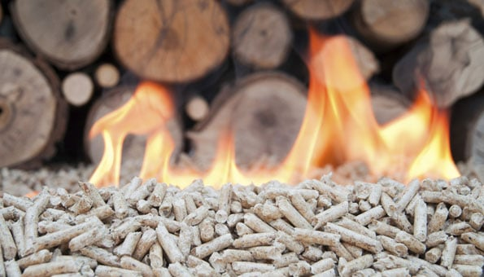

ENERGIE AUS KAKAOHAUT
BIOENERGIE UNSER TEAM
Klimaschutz und gleichzeitig eine nachhaltige Energieversorgung von Industrie, öffentlichen und privaten Haushalten erfordert ein Umdenken und ein Umlenken auf erneuerbare Energieträger. Neben Sonne, Wind und Wasser ist hier vor allem die Biomasse gefragt.
Laut einem Bericht der International Energy Agency (IEA) soll der Anteil der erneuerbaren Energien am globalen Energiemix bis 2018 den Anteil von Erdgas sowie den von Atomenergie übertreffen. Nach dem Medium-Term Renewable Energy Market Report (MTRMR) der IEA werden die erneuerbaren Energien trotz schwieriger ökonomischer Rahmenbedingungen in den nächsten fünf Jahren einen Zuwachs von etwa 40 Prozent verzeichnen. Aber gegenüber den konventionellen Energieträgern, deren Subventionen 6 mal höher sind, bleiben die ökonomischen Herausforderungen für Biomasse anspruchsvoll.
Die Kakaohaut als biogener Brennstoff
DİE BİOMASSE EIN ENERGIETRÄGER mit ZUKUNFT
Biogene Brennstoffe sind von biologischer-organischer Herkunft. Sie sind Teil der Biomasse und enthalten in ihren chemischen Bindungen Sonnenenergie, die als Primaer-Produzenten durch Photosynthese fixiert wurden. Durch Verbrennung kann diese Energie-Bioenergie-wieder freigesetzt werden. Der CO2 -Emissionsfaktor auf den Heizwert bezogen liegt bei 108 t CO2 /TJTS. CO2 ist die Hauptursache des gegenwärtigen Klimawandels. Die Verbrennung und Umwandlung in Energie kann ein wichtiger Beitrag zur Verringerung der Treibhaus-Emissionen sein. Physikalisch wird bei der Verbrennung von Biomasse nur so viel Kohlendioxyd freigesetzt, wie zuvor bei der Photosynthese aus der Atmosphäre aufgenommen wurde. Also fast klimaneutral.
Der wichtigste Vorteil von Biomasse aus Kakaohaut ist seine Erneuerbarkeit und Verfügbarkeit im bereits laufenden und gut funktionierenden Kakaoanbau.
Für die afrikanischen Kakaofarmer bedeutet die Nutzung der Biomasse vor allem wirtschaftliche Sicherheit und Zukunft und macht sie von Spekulationen um den Kakaopreis unabhängiger.
Der ökologische Aspekt
Der Kakaobaum – Theobroma Cacao – wächst in der warmen und feuchten Äquatorzone zwischen 10°N und 10°S vom Äquator. Obwohl die Herkunft des Baums unklar ist, kann er bis in die tropischen Gebiete Venezuelas, Honduras’ und Mexikos zurückverfolgt werden. Einige glauben, dass er ursprünglich im Amazonasurwald in Brasilien wuchs, andere dass er aus Mexiko stammt. Wissenschaftliche Untersuchungen weisen mehr und mehr darauf hin, dass die eigentliche Wiege von Kakao und Schokolade im Ulúa-Tal in Honduras stand. Heute wird Kakao weltweit in einem engen Gürtel um den Äquator angebaut, in sorgfältig angepflanzten Plantagen in den tropischen Regenwäldern Afrikas, Asiens und Lateinamerikas.
Kamerun zählt neben der Elfenbeinkueste und Ghana zu den wichtigsten Kakao produzierenden Ländern. 75% der weltweiten Kakaoernte kommt vom schwarzen Kontinent. Für die kleinen Farmen in den vielen tausend afrikanischen Dörfern ist der Kakaoanbau eine wichtige Einkommensquelle.
Sie haben hier die Möglichkeit direkt von den Kakaofarmern Cameroons den Ernteabfall die ,,Kakaoschale”-ledrig äusserst hart-als Biogenen Brennstoff zu erwerben.
Ob Interesse, Fragen, Anregungen oder Kritik, schreiben Sie uns. Gerne beantworten wir Ihr Anliegen in kürzester Zeit. Selbstverständlich sind wir auch persönlich per Telefon für Sie zu erreichen. Besuchen Sie uns auch im Sozialnetzwerk.